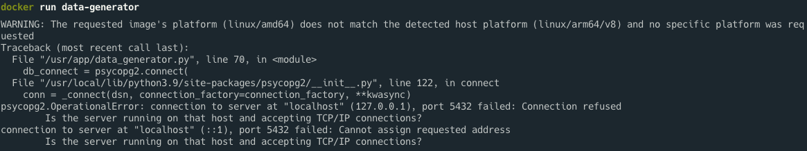

MLOps for MLE - 3
Summary
앞의 코드를 Docker 에서 활용하기 위해 Dockerfile 작성
Docker 컨테이너 간의 네트워크를 연결하여 DB 에 데이터 삽입
DB 컨테이너와 데이터 생성 컨테이너를 묶는 Docker Compose 파일 작성
실습을 진행했던 코드를 보고싶으시다면 여기를 눌러주세요
실습
1. Data Generator on Docker
앞에서 만들었던 데이터 생성 코드(data_generator.py로 부를 예정)를 활용
코드 실행 순서
DB에 연결하는 connector 생성
연결된 DB에
iris_data테이블 생성Iris 데이터 불러오기
불러온 데이터 중 랜덤으로 row 1개를 DB에 삽입
4번을 계속해서 반복
Dockerfile 작성
FROM amd64/python:3.9-slim
RUN apt-get update && apt-get install -y \
postgresql-client \
&& rm -rf /var/lib/apt/lists/*
WORKDIR /usr/app
RUN pip install -U pip &&\
pip install scikit-learn pandas psycopg2-binary
COPY data_generator.py data_generator.py
ENTRYPOINT ["python", "data_generator.py", "--db-host"]
CMD ["localhost"]- from : 이미지를 만들 때 base 가 되는 이미지 지정
- RUN : 이미지를 만들 때 실행할 코드를 지정, 첫 번째
RUN에서는 해당 Dockerfile 을 이용하여 컨테이너에 접근하여psql을 사용하기 위해postgresql-client을 설치 - WORKDIR : 작업 directory 지정
- RUN : 두 번째
RUN에서는 컨테이너에서 python 스크립트를 실행할 때 필요한 패키지 설치 - COPY :
WORKDIR로 지정한 directory 를 기준으로 파일이나 폴더를 이미지에 복사 - ENTRYPOINT : 컨테이너가 실행될 때 시작할 프로세스를 입력
- CMD : 컨테이너가 실행될 때
ENTRYPOINT에 전달할 argument 를 입력
Docker build
$ docker build [OPTIONS] PATH | URL | --> 이 명령어를 통해 dockerfile 을 기준으로 이미지를 생성
$ docker run [docker image name]-> build 한 이미지 실행
하지만 port 및 TCP/IP 관련 에러가 뜨는데 이는 local 과 DB container 는 연결되어 있지만 Data Generator 과 DB Container 가 연결되어 있지 않음
이를 해결하기 위해 컨테이너 간 통신할 수 있도록 네트워크를 생성해야 함

2. 네트워크 연결
docker network 사용
네트워크 정의 및 생성
$ docker network create [network-name]실행 중인 DB 컨테이너를 생성된 네트워크에 연결
$ docker network connect [network-name] [DB container name]EX)
$ docker network connect my-network postgres-server
네트워크 삭제
$ docker network rm [network-name]docker 재 실행
$ docker run -d \
--name [docker image name] \
--network ["network-name"] \ EX)
$ docker run -d \ --name data-generator \ --network "my-network" \ data-generator "postgres-server"
-> psql 을 이용하여 DB에 접속해서 확인해보면 추가되는 것을 확인할 수 있음
3. Docker Compose
Compose 파일의 아키텍처
version: "3"
services:
postgres-server:
...
data-generator:
...- version : Compose 파일의 버전
- services : Compose 에 묶일 서비스들을 의미
Postgres server service
version: "3"
services:
postgres-server:
image: postgres:14.0
container_name: postgres-server
ports:
- 5432:5432
environment:
POSTGRES_USER: myuser
POSTGRES_PASSWORD: mypassword
POSTGRES_DB: mydatabase- postgres-server : 서비스의 이름, 실행되는 컨테이너 호스트의 이름
- ports : 컨테이너에서 외부로 노출할 포트 포워딩을 설정,
host:container형식으로 사용되고 여러 개 지정 가능 - environment : 컨테이너를 실행할 때 사용한
-e옵션과 같은 역할
Data generator service
version: "3"
services:
data-generator:
build:
context: .
dockerfile: Dockerfile
container_name: data-generator
depends_on:
- postgres_server
command: ["postgres-server"]- build :
- context : 이미지를 build 하기 위해 dockerfile 이 있는 절대경로 및 상대경로 설정
- dockerfile : context 에서 설정한 경로에 있는 dockerfile 의 파일명 입력
- depends_on : Compose 로 띄워지는 서비스 간의 종속성 순서대로 서비스를 시작할 때 사용
- command : Dockerfile 에 작성되어 있는
CMD를 덮어씀
위에서 작성한 코드를 하나의 파일로 합쳐 만들고 실행
$ docker compose up -d- -d : Detached 모드(백그라운드에서 컨테이를 실행 후 유지)로 실행
하지만 docker ps 를 입력해보면 postgres server 만 띄워져있음
depends on 으로 서비스 간의 종속성은 정해졌지만, 실제로 postgres-server 가 띄워진 뒤에 곧바로 data-generator 가 띄워짐
postgres-server 의 준비가 되지 않은 상태로 data-generator 가 DB 와 연결을 하려다 보니 Exited 문제가 발생
-> 이를 해결하기 위해 healthcheck 와 condition 을 추가
healthcheck 와 condition 추가하기
### postgres-server에 추가
healthcheck:
test: ["CMD", "pg_isready", "-q", "-U", "myuser", "-d", "mydatabase"]
interval: 10s
timeout: 5s
retries: 5
### data-generator에 추가
depends_on:
postgres-server:
condition: service_healthy- test : 테스트 할 명령어 입력
- interval : Healthcheck 의 간격 설정
- timeout : Healthcheck 의 timeout 을 설정
- retries : Timeout 의 횟수 설정
- condition : Healthcheck 기능을 사용하기 위해 depends_on 의 parameter 로
condition: service_healthy를 넣어줌
이후 서비스를 다시 실행하면 문제 없이 실행이 가능